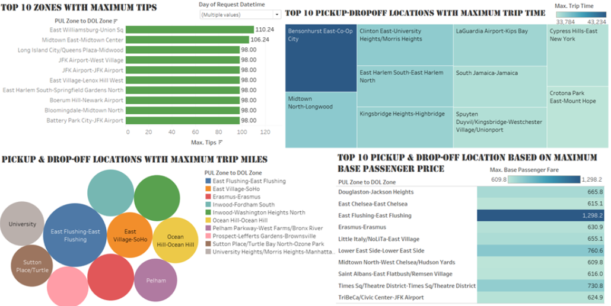
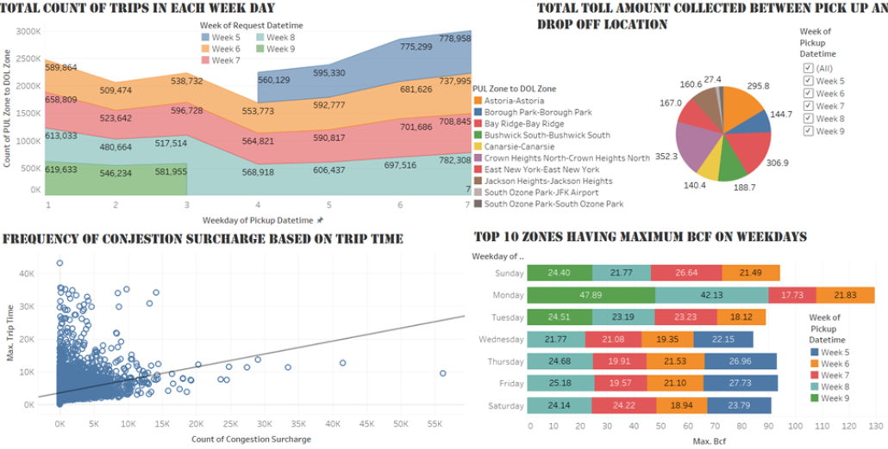
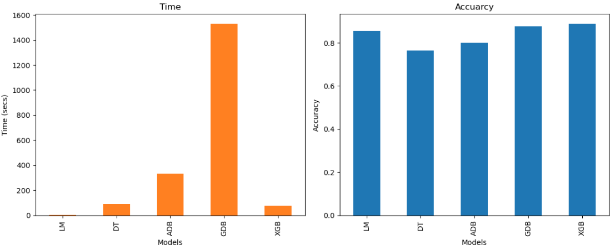

NYC Trip Data Analysis
Introduction
New York City (NYC) is one of the world's largest metropolises, and its public transportation system is among the busiest and most complex. Taxis play a critical role in providing fast and flexible transportation services, filling gaps that may not be accessible through the subway and bus systems.
In the taxi industry, understanding customer demand patterns, regional preferences, and factors influencing customer satisfaction (such as tipping) is crucial to optimizing operations and increasing profitability. Enhancing the profitability of taxi services by analyzing customer behavior and preferences is a complex challenge in today’s highly competitive digital landscape.
Objectives
Our goal is to provide insights to stakeholders that can assist in strategy development and decision-making in the following areas:
Optimizing the distribution of the taxi fleet based on customer demand patterns, with the aim of improving operational cost efficiency.
Understanding and meeting customer preferences and needs to enhance customer loyalty and satisfaction.
Identifying and exploring revenue opportunities by adjusting pricing strategies, promotions, and additional services through regional and travel route analysis to maximize earnings.
Identifying the factors that encourage customers to show appreciation, such as tipping.
Key Areas of Analysis
Variability in demand based on factors such as time, region, and customer preferences.
Income patterns tied to specific regions and travel routes.
The factors that influence the amount of tips received.
 Conclusion and Impact
Using predictor variables including PULocationID, DOLocationID, trip_miles, trip_time, weekday_num, and pickup_hour, I have forecasted the total_amount for taxi fares. The regression models evaluated encompassed Linear Regression, Decision Tree, AdaBoost Regressor, Gradient Boosting Regressor, and XGBoost Regressor. Among these, the XGBoost Regressor demonstrated superior performance, achieving an accuracy of 88.9% in predicting taxi fares while requiring minimal training time. This model's effectiveness is reflected in its R-squared value of 0.8893, indicating a strong fit to the data and reliable predictive capability.
These goals are geared towards improving overall profitability and operational efficiency, while also ensuring that customer needs and preferences are met, resulting in higher customer satisfaction and loyalty.
